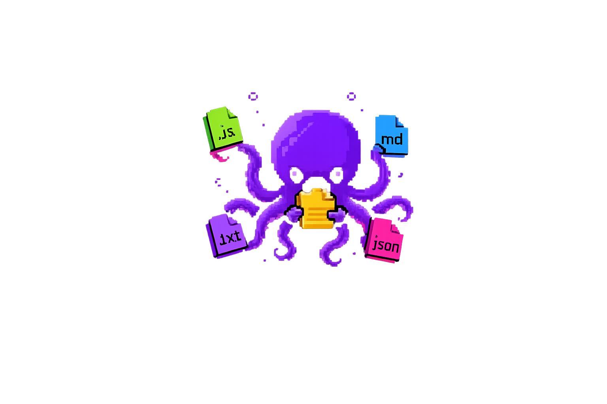

> think. act. observe. answer.
A lightweight AI agent that runs in your terminal. Powered by Google Gemini. Built from scratch in vanilla Node.js — no frameworks, no magic — to understand how tool-calling really works under the hood.

Everyone who has shipped code, fixed bugs, or improved docs. Thank you 🙌